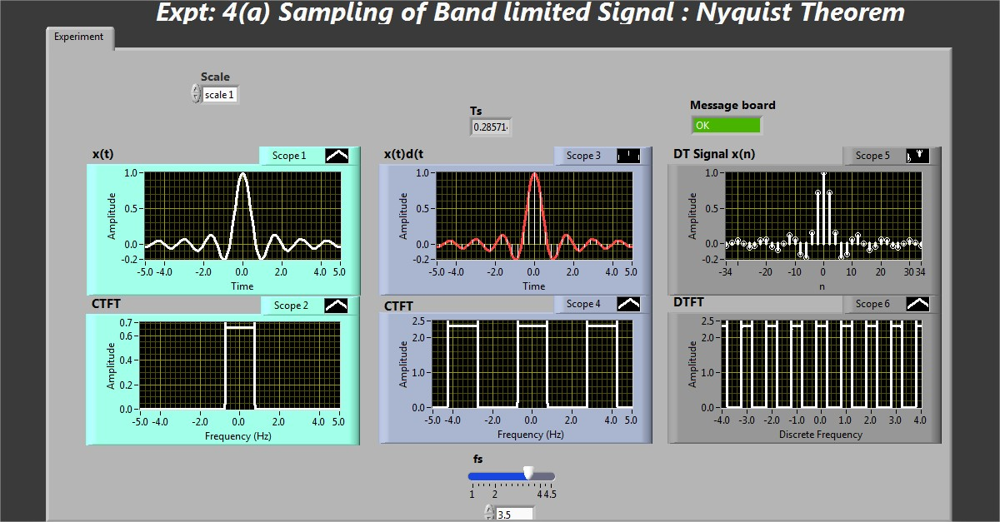
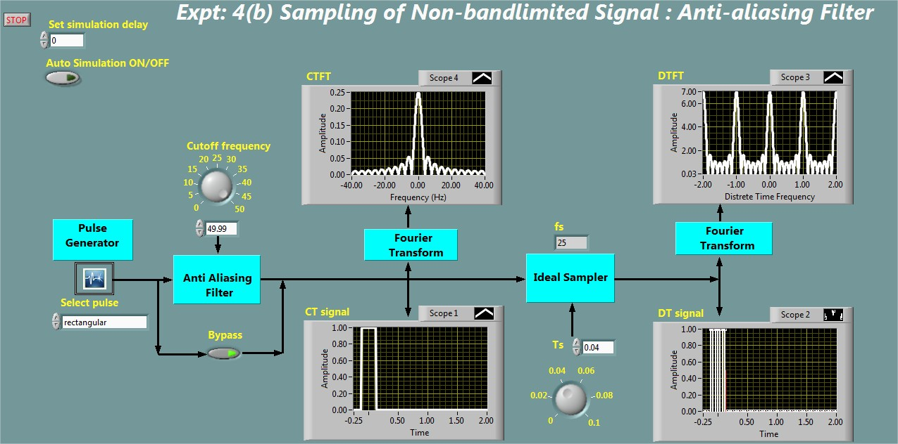
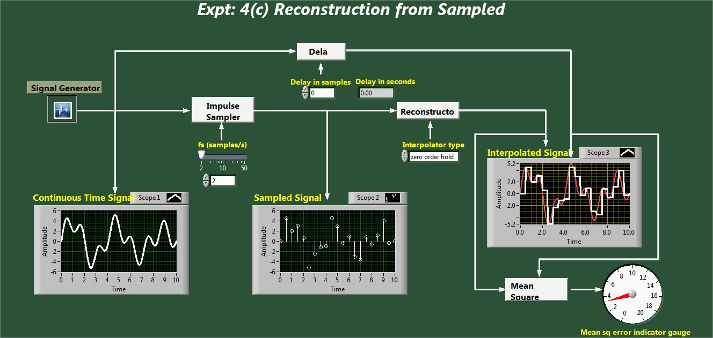
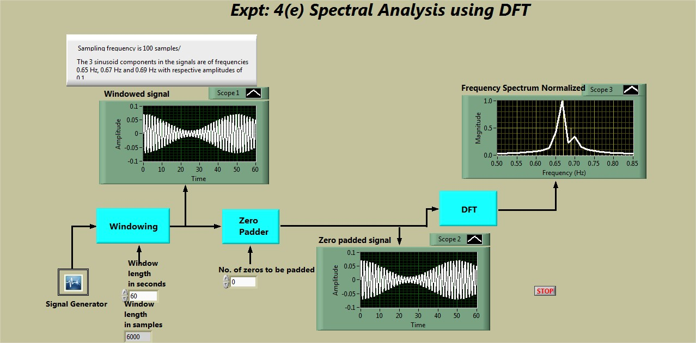
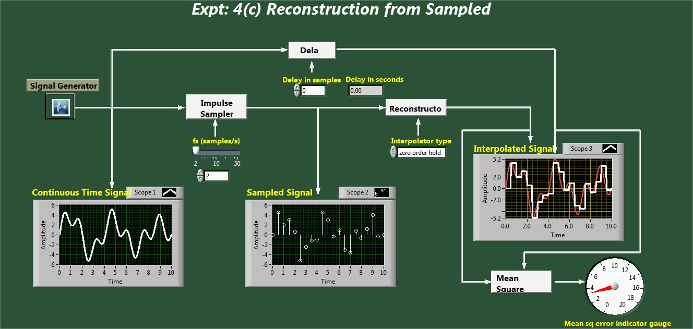
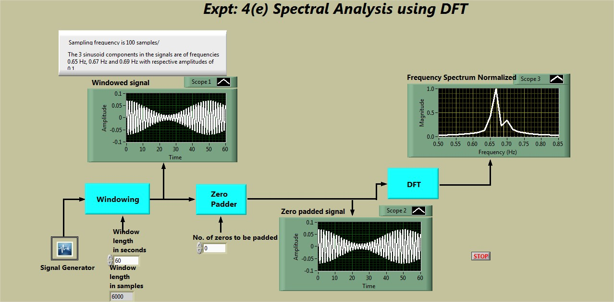

Shakshat Virtual Lab 
INDIAN INSTITUTE OF TECHNOLOGY GUWAHATI
Sampling and signal Reconstruction


Objectives
1. To demonstrate the time domain sampling of bandlimited signals (Nyquist theorem).
2. To demonstrate the time domain sampling of non-bandlimited signals and antialiasing filter.
3. To demonstrate the signal reconstruction using zero-order hold and first-order hold filters.
4. To demonstrate the sampling in frequency domain (Discrete Fourier Transform).
5. To demonstrate the spectral analysis using Discrete Fourier Transform.
Snapshot of the experiment windows




